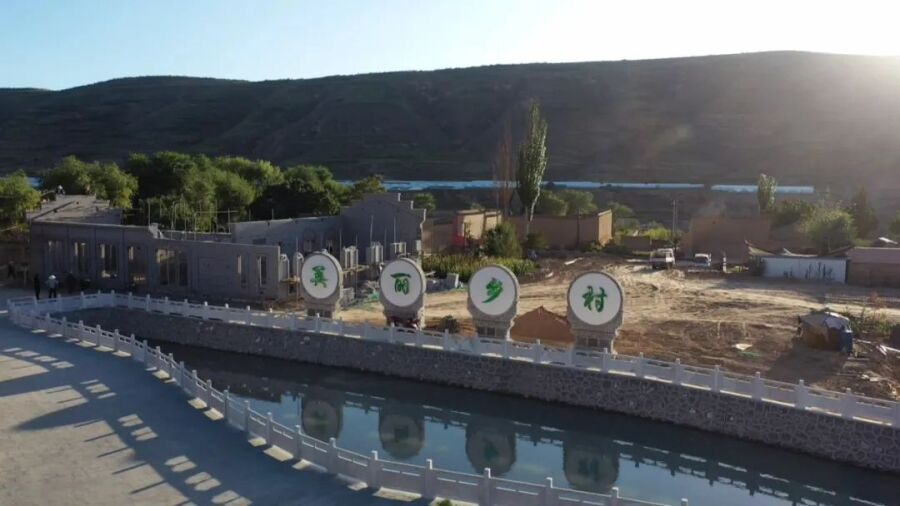

1944 年深秋的清晨，11 岁的任忠兴背着竹篓假装上山割牛草，竹篓底层藏着沉甸甸的干粮和盐。他沿着湿滑的石路前行，时刻警惕着日寇的巡逻队 —— 这是他第 3 次接受党支部书记任奖秉的嘱托，给被困在深山里的 “三五支队” 战士送补给。
此时的诗冠头已被日寇封锁 57 天。11 月的一次扫荡中，民兵任根夫在蒋檀哨卡发现日军动向，一口气跑 7 里地通报险情，任奖秉立即组织 “三五支队” 小分队转移，却没能让所有群众及时撤离 —— 日寇的扫射造成二死四伤的惨剧。但村民们没有屈服，党支部迅速组织民兵成立 “秘密运输队”，用竹篓、柴捆作掩护，冒着生命危险为山上战士输送物资，同时将受伤的战士转移至余姚后方医院。
任奖秉，这位诗冠头第一任党支部书记，是村民心中的 “主心骨”。1943 年，他在钱依群的介绍下加入地下党，次年牵头成立党支部和民兵中队，将 545 名抗日自卫队骨干整编成 200 余人的武装力量。他的家成了地下党的 “秘密指挥部”，薛驹、范雪伦等 “三五支队” 将领在此居住工作，深夜的油灯下，他们一边规划作战方案，一边发动村民筹措军粮、制作担架。

1944 年 2 月的桃花岭战斗中，民兵们冒着枪林弹雨，帮助受伤的重机枪手背起武器追赶主力部队，正是这挺及时到位的重机枪，给日寇以沉重打击。战斗结束后，村民们连夜清理战场，用自家的门板抬运伤员，将牺牲的 27 名战士安葬在山岗上，用泥土和石块为英雄筑起简易墓碑。
这些故事，被文史爱好者周平章用数十年时间打捞整理。他走访全村老人、查阅市档案馆史料，终于让这段几乎被湮没的历史重见天日。如今，任奖秉的名字被刻在村公告栏的首位，他的故居虽已斑驳，却依然矗立在山涧旁，诉说着 “军民鱼水情” 的抗战岁月。
返回